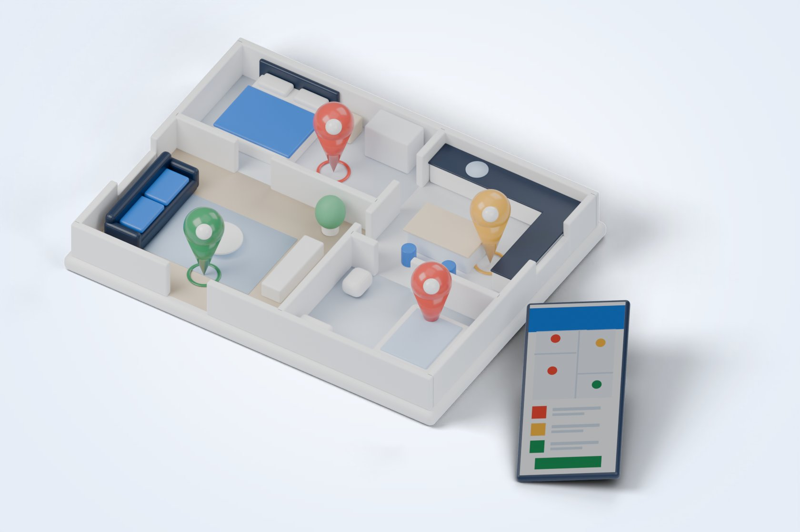
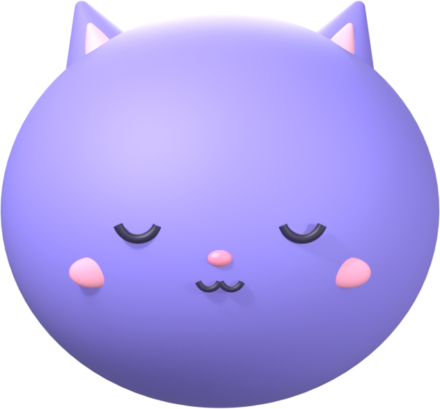
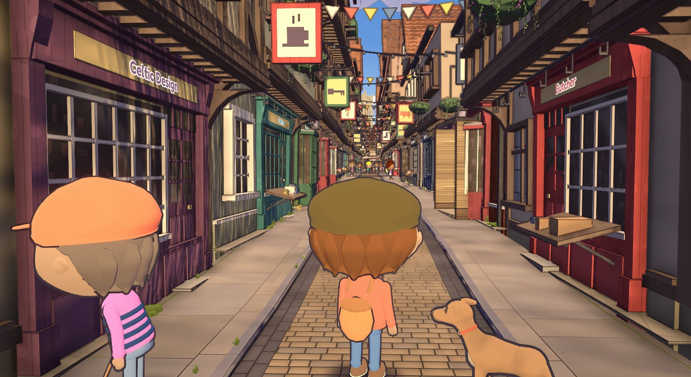

What we automate
Built for how you work, not off the shelf
Reports and paperwork
The weekly report, the monthly pack, the certificate, the letter: produced from your own records, the same way every time.
Checks and compliance
Rules applied the moment data arrives, with a record of every check, so nothing waits for someone to remember.
Data between systems
Information moved from one system to the next without copying and pasting, and checked on the way.
Customer and staff journeys
Sign-ups, bookings, approvals and reminders that run themselves and tell the right person when they need a human.
How it works
Tell us the process
Show us how the work is done today, and where the time goes.
We build the automation
Shaped around your process, tested before you rely on it, and shown to you as it takes shape.
You run it, we keep it working
Your team gets the hours back. We look after it as your business changes.
Our tools
Three live, three in development, and they say so
Training
Ebor Exam
Any exam or assessment, marked and certified. Candidates sit it on a laptop, tablet or phone, the server marks it, and every certificate can be checked against the record by anyone who scans it.
Finance
CUSTOMER MASTER FILE · CHECKED IN YOUR BROWSER
E-invoicing data check
Gets UAE customer data ready for the Ministry of Finance e-invoicing programme, and checks invoice files against UBL and PINT AE. Runs entirely in your browser; nothing is uploaded.
Ebor
A compliance workspace for UAE businesses: six tools on one platform, starting with anti-money-laundering checks and company files.
Construction

Ebor Works
Building inspections on a phone: snags with photos pinned to the floor plan, repairs verified, and a handover folder for the client.
Health
Little Cat
A gentle care diary for little ones: seizures, sleep, feeds and medicines, shared between everyone who looks after a baby or young child, especially a child with epilepsy. Health advice from the NHS, with sources.

Gaming

Echoes of York
A storybook 3D game of the real city of York, to walk, cycle, balloon and row through.
How we build
Proof, not promises
Everything we build leaves a record somebody else can check: who did what, when, and against which version.
Your data stays put
Records live in London, nothing on our pages loads from another site, and our e-invoicing tool never uploads a file at all.
Small, and on purpose
The people who build your automation are the people you talk to. Every change to Ebor Exam passes thousands of automated checks before it reaches you.